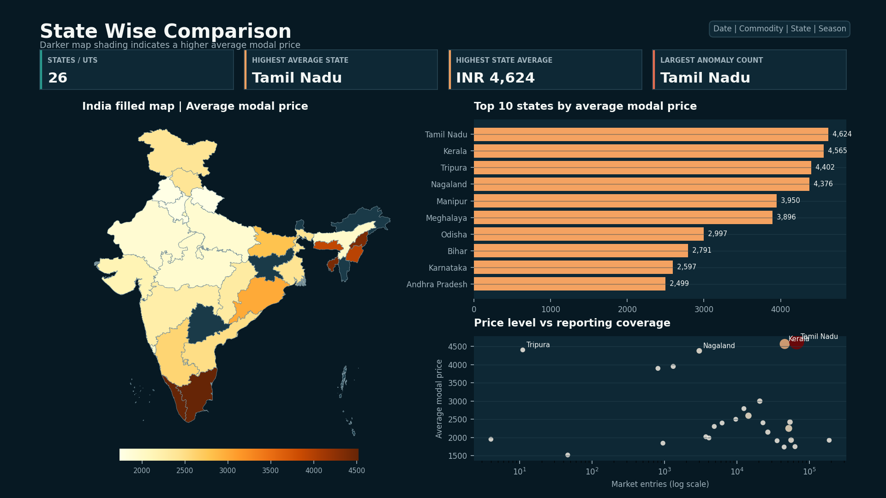

Indian mandi prices, turned into decision intelligence.
A reproducible analysis of Onion, Tomato, Potato, Wheat, and Rice prices across 1,597 markets using Python, SQLite, Power BI, anomaly detection, and Prophet forecasting.

Page 2 — State price comparison with India choropleth, state ranking, and anomaly context.
Price data is abundant. Trustworthy signals are not.
Mandi quotes vary by crop, market, season, grade, and reporting quality. The project creates one audited analytical layer and carries the same definitions through SQL, Power BI, forecasting, and plain-English insights.
The Business Question
Where are crops consistently expensive or cheap, when do seasonal price pressures appear, and which quotes deserve immediate investigation?
The Analytical Response
- ✦ Canonical geography and documented quality rules
- ✦ Comparable volatility and anomaly measures
- ✦ State, market, crop, and season drill-downs
- ✦ Leakage-safe chronological forecast validation
Built as a complete analytics workflow.
Python
Pandas cleaning, anomaly reports, automated insight generation, and chart exports.
SQLite
Typed fact table, indexed dimensions, rankings, trends, and reproducible CSV results.
Power BI
Date model, documented DAX, four-page blueprint, and data-backed visual previews.
Prophet
90-day Onion and Tomato baselines with strict chronological holdout metrics.
Five signals worth investigating.
Onion has the highest coefficient of variation.
Tomato's Kharif average exceeds Rabi by this margin.
Of cleaned records breach the two-standard-deviation rule.
Potato contributes the largest commodity anomaly count.
Quotes place modal price outside the stated min-max range.